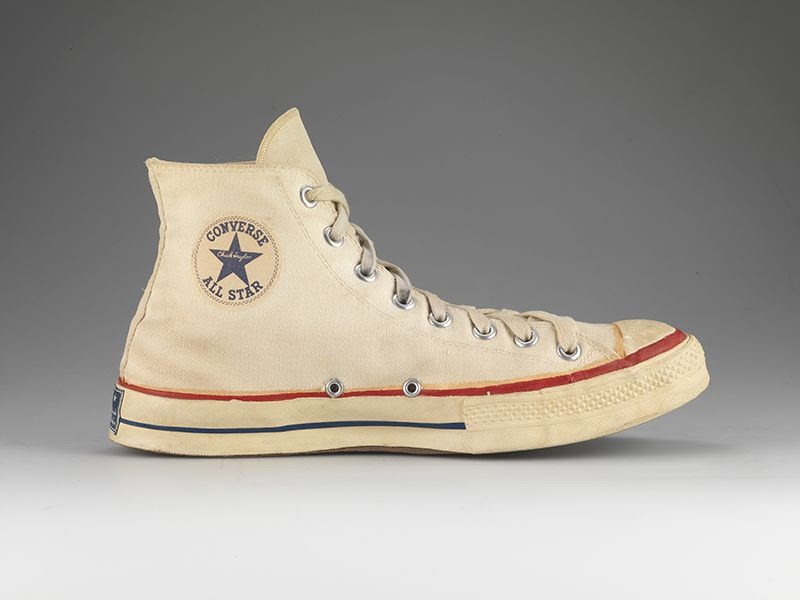

In the 1870s, shoes with rubber soles known as "plimsolls" were popularized by vacationers, and then by various sportsmen for their comfort. To increase the grip of the shoe, specialized soles began to be developed with engraved patterns. Popularity of athletic shoes among common Americans around the turn of the 20th century, where they adopted the nickname "sneakers". Sneakers began to be produced for specific sports, such as basketball, and grew even more in popularity with endorsements such as basketball star Chuck Taylor endorsing Converse All Stars. Athletic shoes were then differentiated and marketed for different sports, and eventually, as lesiure opportunities expanded, were commonly worn by non-athletes.
Companies producing sneakers began to target their products to the casual fashion market. These companies continuedto further develop their styles as well as their marketing skills. Sports endorsements with famous professional athletes grew, particularly Nike's deal with, at the time, rookie Michael Jordan to create the Air Jordans. Over the course of a little over a century, sneakers developed from an athletically advantageous footwear into a fashion statement associated with personal identity. Now, sneakers are a staple of modern fashion, where luxury design and street wear intersect. Sneakers have also gone on to have a cultural impact, beyond sports, in pop culture realms such as music and film, and they have even made their way into the food scene.